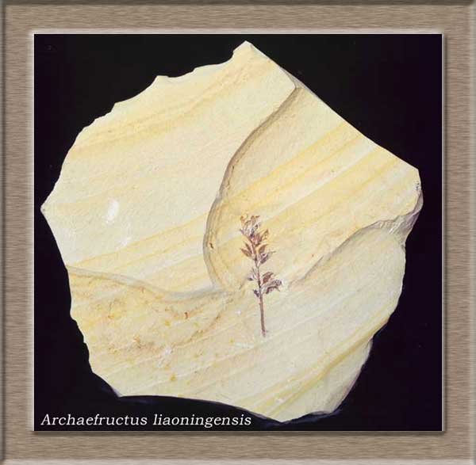

November 24th,2018
 Лотос - один из самых древних цветов на земле — существовали они уже в меловом периоде, больше 100 млн. лет назад. Их ископаемые останки находят и в Северной Америке, и на Дальнем Востоке, и даже в Арктике. В наше время насчитывают, строго говоря, всего два вида чистокровных лотосов. Самый древний цветок, «мать всех цветов», был обнаружен археологами в 2002 г. на территории современного Китая. Его возраст более 125 000 000 лет.
Очаровательные и яркие подсолнухи полностью оправдывают своё название. У них есть удивительная способность поворачивать соцветие вслед за движением солнца. Букет из этих чудесных цветов – проверенное средство добавить красок в серые будни.